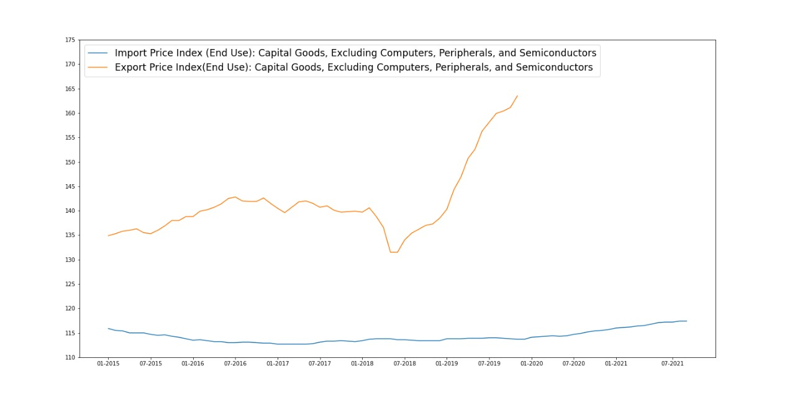
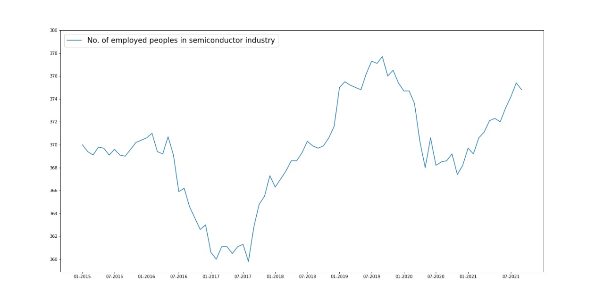

Um semicondutor é todo aquele material que, dependendo das circunstâncias — temperatura, pressão, radiação e campos magnéticos —, pode atuar como condutor, permitindo a passagem de corrente, ou como isolante, impedindo que a mesma passe. Os semicondutores, portanto, se diferenciam dos condutores porque podem executar as duas fonções ao mesmo tempo. Atualmente, o semicondutor mais utilizado é o silício, especialmente na indústria eletrônica e na informática, por ser o mais abundante na natureza e o que se comporta melhor ao ser submetido a altas temperaturas.
A pandemia causada pelo covid-19 exigiu mudanças nos ambientes de trabalho e acadêmicos, favorecendo o crescimento do modelo home-office e, por conseguinte,acelerando o processo de digitalização e resultando em um aumento da demanda de dispositivos eletrônicos. Consequentemente, este efeito gerou uma demanda histórica por semicondutores e outros componentes eletrônicos, culminando em um problema de fornecimento.
Para oconsumidor final, este cenário foi traduzido num aumento repentino no preço de qualquer produto eletrônico, desde carros até GPUs para computadores. Segundo levantamento da Logcomex, startup de inteligência e dados para o comércio exterior, componentes como os circuitos integrados eletrônicos e circuitos para memória RAM registraram um aumento no preço de 4.803% e 1.903% respectivamente. Isso significa que os produtos que custavam US $2,37 e US $4,94 em julho de 2020 atingiram preços de US $116,18 e US $99,01 um ano depois.
A crise de produção dos chips teve forte impacto na área de eletrônicos de consumo, forçando diversas marcas a reduzirem a produção de dispositivos, além de afetar a indústria automobilística, interrompendo as linhas de produção de veículos. Um levantamento feito pela Associação Brasileira da Indústria Elétrica e Eletrônica (Abnee) apontou que 70% das empresas do setor que utilizam os componentes enfrentam o problema. Porém, no Brasil, essa situação se releva ainda mais grave pelo encerramento da produção de automóveis da marca Ford no dia 11 de janeiro de 2021. 5A multinacional operava uma fábrica de veículos de Camaçari (BA) e outra de motores e transmissões em Taubaté (SP), além da unidade de Horizonte (CE), que montava os jipes da marca Troller. Como consequência, a Ford tornou-se apenas importadora e viu suas vendas despencarem 72,9% no mercado
As empresas de semicondutores aumentaram a produção, o que contribuirá para o crescimento esperado da receita de cerca de 9% em 2021. Alguns governos também estão aumentando seus investimentos em tecnologia de semicondutores para diminuir o impacto das interrupções globais na cadeia de produção. Muitas empresas que precisam de semicondutores já estão reconsiderando suas estratégias de compras de longo prazo. Algumas, por exemplo, podem mudar de um modelo de pedido que ajuda a minimizar os custos de estoque, para um no qual eles pedem semicondutores com antecedência. Mas é improvável que a atual escassez de chips seja resolvida em um futuro próximo, em parte por causa das complexidades do processo de produção de semicondutores.
Gráfico 1 - Preço de produção, de importação e de exportação de produtos que utilizam semicondutores.
Gráfico 2 - Preço de importação e de exportação de outros bens.
Gráfico 3 - Número de empregados na indústria de semicondutores..
Fale conosco
Daniel Scussel: daniels@unisantos.br
João Gabriel Blanco de Souza: joao.souza@unisantos.br
Matheus Emmanuel Peres Nascimento: matheusemmanuel@unisantos.br
Victor Henrique Menegasso: victormenegasso@unisantos.br
Vitor Rodrigo Lopes Martins:vitor.rodrigo@unisantos.br